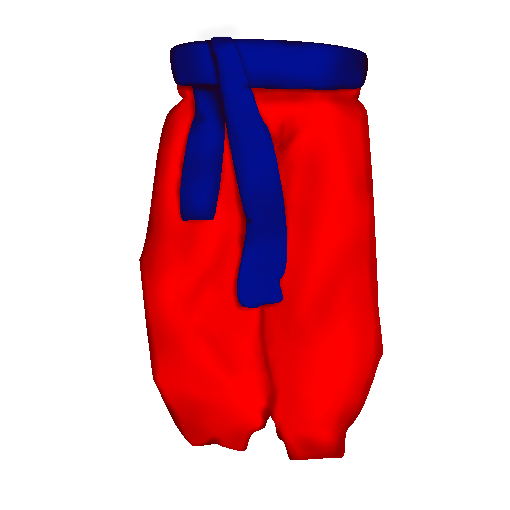
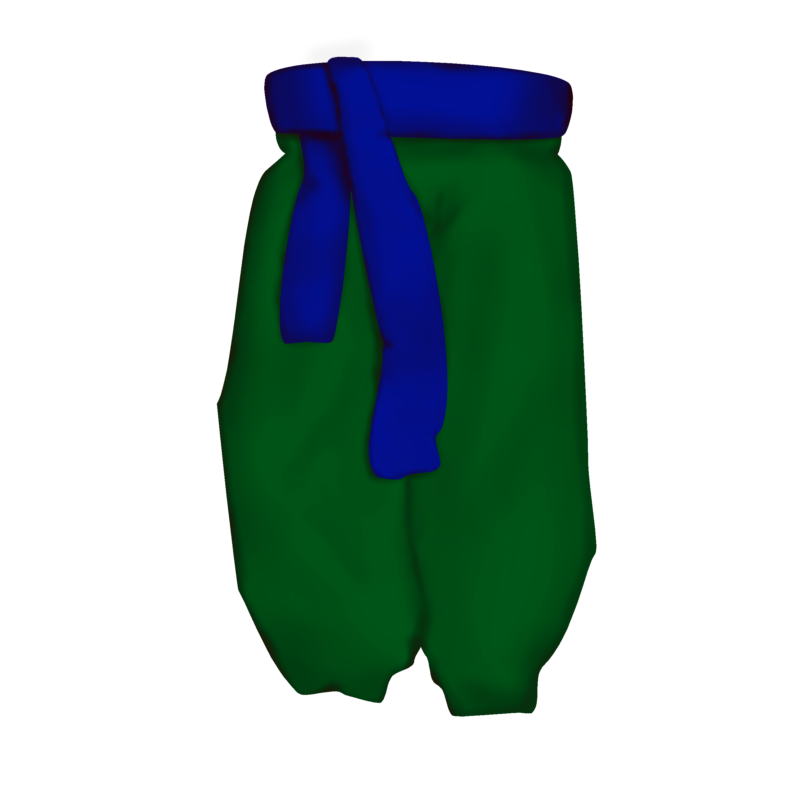
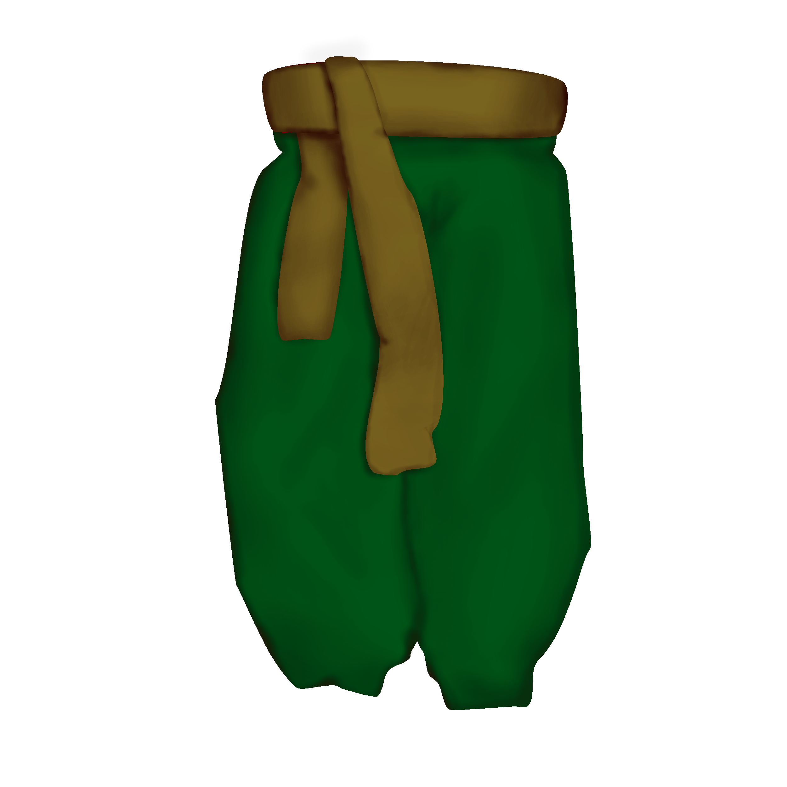

Харків
У Харкові найпоширенішими були червоні шаровари з червоним поясом. Це вважалося досить модним і, водночас, підкреслювало приналежність до козацькості. Також у Харкові уже на той час зрозуміли, що використання зеленого кольору допомагає злитися з місцевістю, тому часто це використовували.
  Такі шаровари були дуже довгий час у вжитку в Харкові. Навіть після розпаду козацтва, шаровари продовжували бути в асортименті одягу харківчанина. Також, оскільки Харків був центром українськості та української творчості, то шаровари вдягали також щоби показати свою позицію та патріотизм. У Харкові шаровари найдовже залишалися пересічним елементом одягу